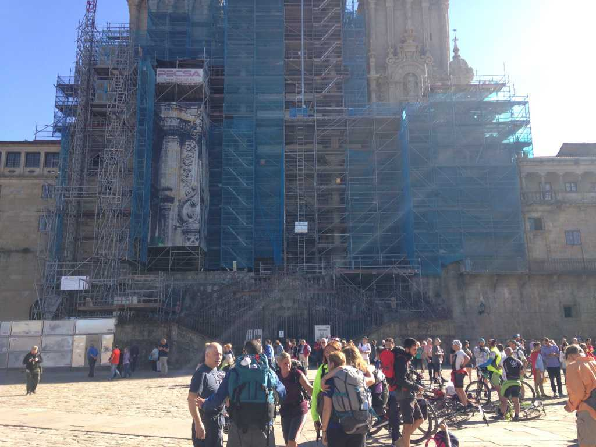
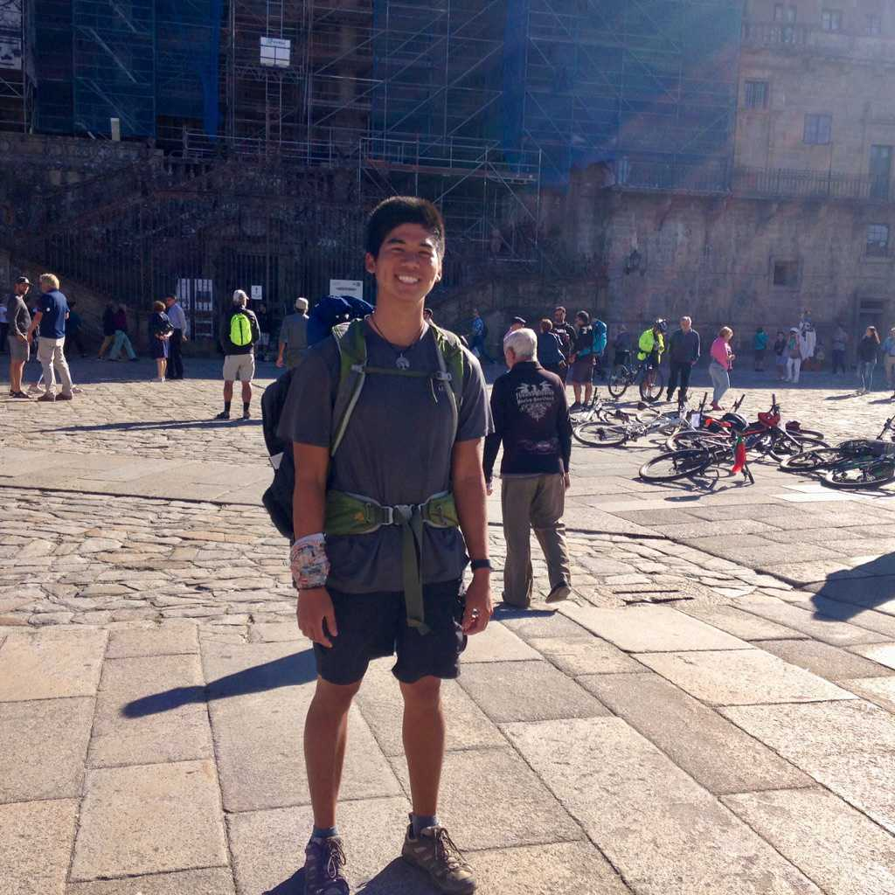
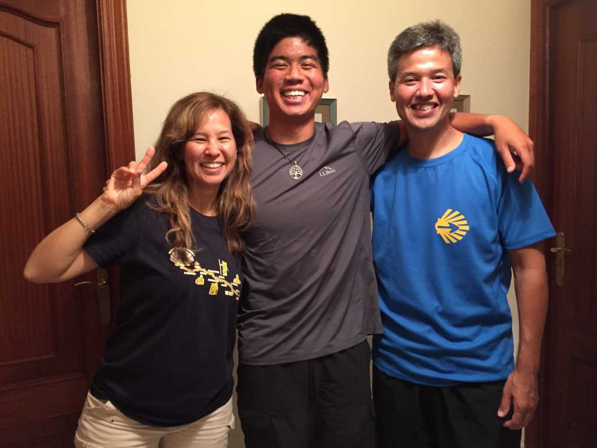
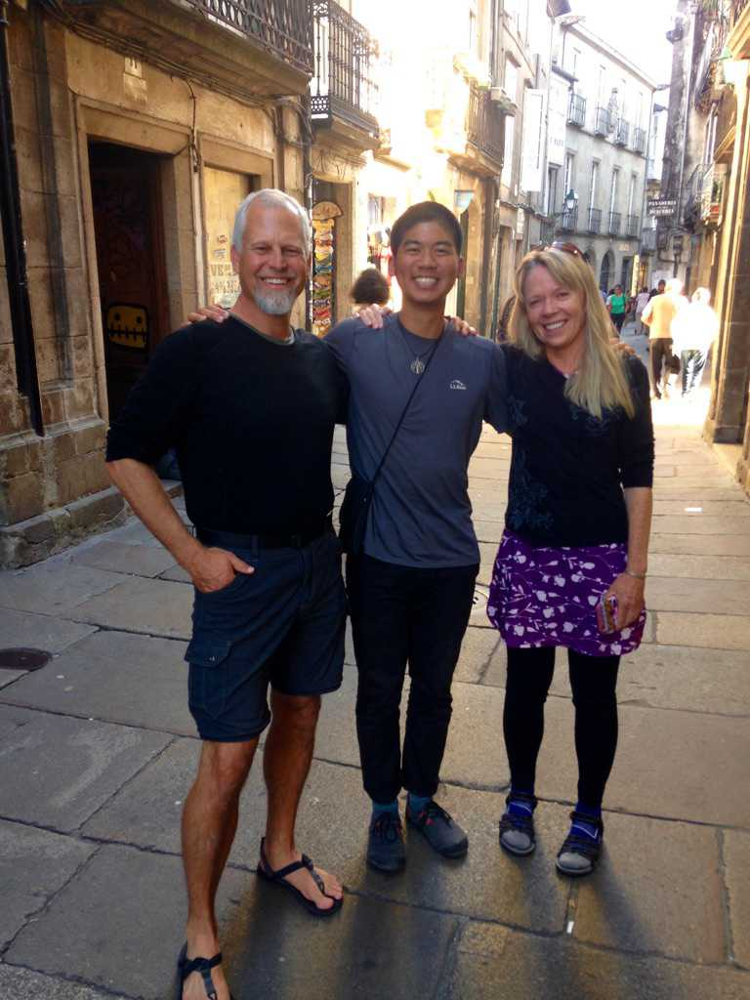
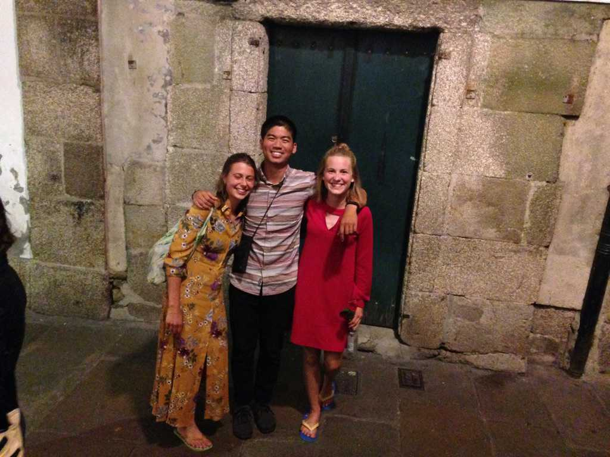
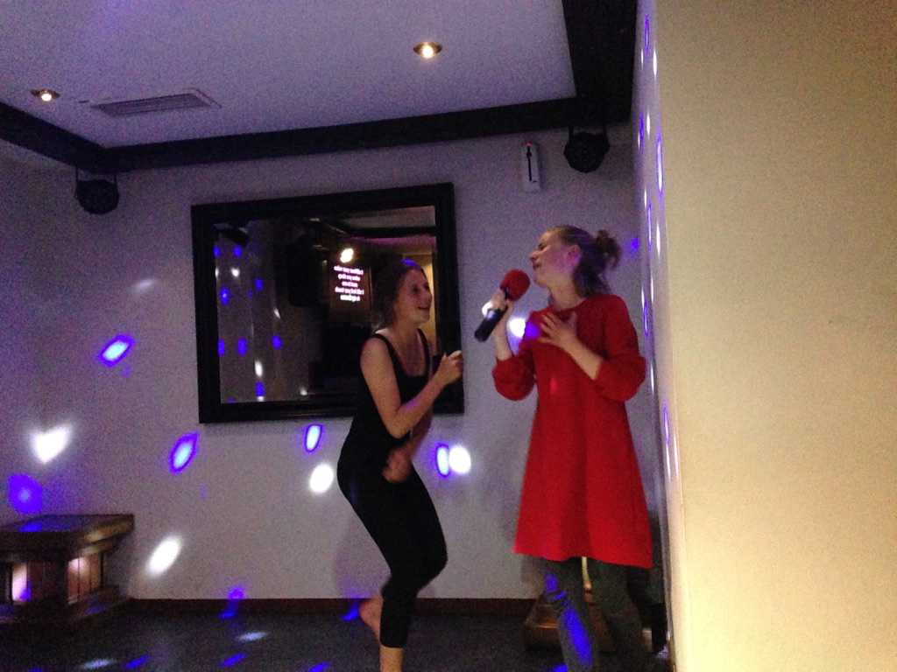
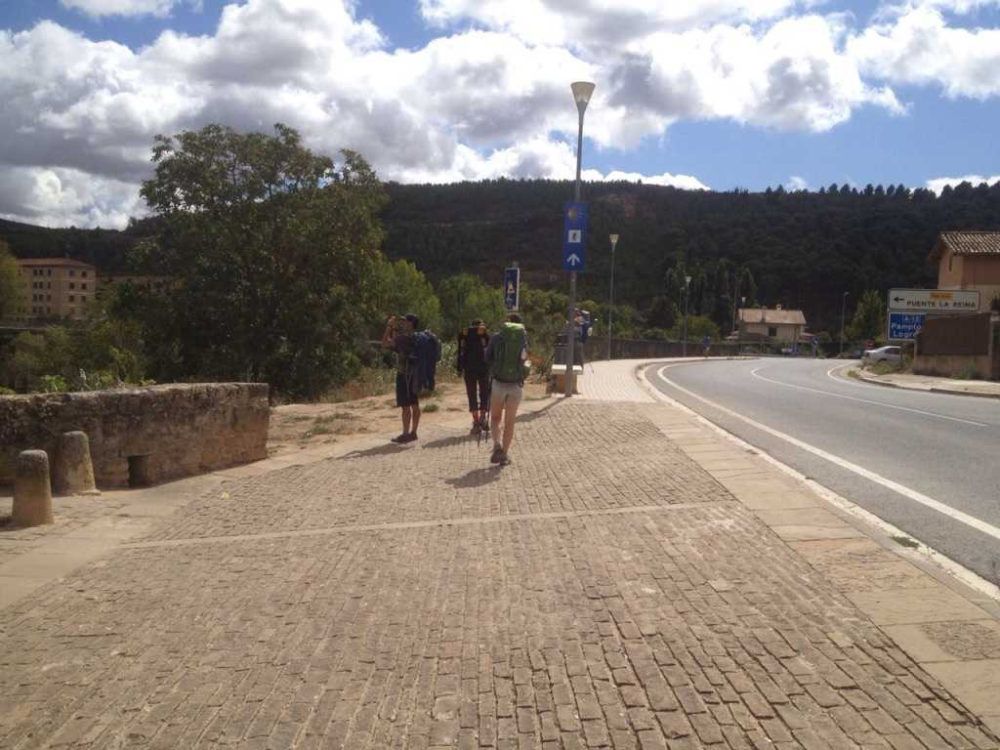

16: Santiago
“How we spend our days is, of course, how we spend our lives.” – Annie Dillard
October 8, 2017 - Day 31
Pedrouzo, Spain.
In 20 kilometers, I will reach Santiago de Compostela. The anticipation has left me sleepless. Ali and Karen are fast asleep. I hope to see them again soon. I pack my things and make a quiet exit.
It’s dark out. Cars lie dormant under the hazy hue of flickering streetlights. Shop-signs strobe with a familiar fluorescence. I’m on the corner of a three-way intersection, eating a bun Karen had given me the night before. A wiry cat pokes its nose around, searching for food perhaps. Not too far ahead, I hear the rhythmic clacking of steel against pavement and rock. I finish my bun and proceed into the twilight, guided by nothing more than a small yellow arrow.
Neurons fire, muscles tense. One leg initiates, the other balances. Knee propels forward, heel touches ground. My weight shifts. Heel lifts, toes tip, a leg swings. One step, repeat.
I have suffered. I have endured pain. I am no longer under the illusion that life is best lived in pasts, shoulds, and futures. This is it. The people. The weather. The circumstances. Dusted boots and tall rucksacks. A sunflower. Cobalt skies. Birdsong. Valleys. One leg in front of the other. Trotting. Walking. Sauntering.
A strange thing has happened. 10 kilometers from Santiago, while walking along a sidewalk, I was either hallucinating or vividly imagining the presence of every person I met on the Camino alongside me. Matilde and Franca were tiptoeing across the fence to my left, as if on a tightrope. Closer to me were Stepan, Jim, and Kathy. Marieke’s to my right. Everyone else was behind me, walking in silence. I realize that I have walked in solitude, but never have I been alone. The people, they have found a permanent place in my heart.
Purpose may give direction to the journey, but it is our immediate presence and attention that gives it meaning.
Santiago awaits.
Santiago
I reach Santiago de Compostela on October 8th of 2017. It’s a Sunday. I’m in a dreamy state of mind, not at all aware of time and unsure of what to expect upon reaching the cathedral. I sift through crowds of tourists and pilgrims, between narrow streets and alleyways, guided by nothing more than a yellow arrow. The sound of bagpipes and commotion fill the air. Something smells delicious. Anticipation is coursing through my veins.

I walk to the center of the plaza, dismount my rucksack, and sit for awhile. I look at the faces surrounding me, searching for a sign. I feel nothing.
I turn my attention and notice a man looking at me. We stare at each other for what seems like an eternity. The look in his eyes speaks to me: Yes, you are here. Yes, you have made it.
I begin to cry. Peace and stillness, awe and gratitude, love and surrender; I am filled with the energy of raw, unfiltered emotion. The boundary between the world and I dissipates. I feel connected, whole, complete. I am no longer just Phil. I am a fluid, living, impermeable being that simply lives behind a mask called Phil.
The people around me suddenly become more than just people. They’re human beings with families, friends, and feelings of their own; they are each in possession of their own unique stories, lives they’ve lived and will continue to live. They too will one day die. Their eyes emit a beautiful, radiating light, a light I can only describe as the light of Being, a light that says:
“I am human. I too feel love, pain, suffering, joy, curiosity, wonder. I am you. You are me. A perfect bundle of imperfections. And here we are, together, on a journey across Spain, across life, living a shared existence on a tiny blue mote called Earth amid a less tiny, wildly unknown universe. This is it.”
The man approaches me in tears, and we hold each other.

October 9, 2017 - The Day After
Santiago de Compostela is the official endpoint of the Camino, though some pilgrims decide to walk the extra 90 or so kilometers to Finisterre, a coastal city at the edge of Spain, the end of the world. I had intended to end my journey there, but something convinced me otherwise.
I walk for 20 kilometers before feeling that something is off. It just doesn’t feel the same. My sense of purpose is gone.
Why had I decided to continue in the first place? I have always known how to persevere, how to press on, how to move forward – it had carried me through the pain, to Santiago. But something is telling me the journey needs to end back in the city. At the next town I hop on a bus back to Santiago. In the past I would have felt a pang of regret, a bruising of my ego, for not muscling through to the end. But there was no feeling of regret or any longing for more. I felt content. I had had enough.
It was one of the best decisions I had ever made. Over the next 4 days, I say goodbye to all of the significant people I had met:

Ali and Karen (the brother and sister I met on my second to last day). They “adopted” me, and I really bonded with Ali. He felt like a long-lost older brother.

Jim and Kathy (nearly cried after seeing them. It had been at least 1.5 weeks since we had last seen each other. They were my first friends. Kathy said, “The journey is coming full-circle.” Indeed, it was.)

And of course, me and my favorite Germans: Franca and Matilde. I ran into them right after running into Jim and Kathy.

Karaoke!

The journey would not have been the same without them and the many others with whom I do not have pictures with.
But there was still one story left to close: Marieke.
I still had to go see about a girl.